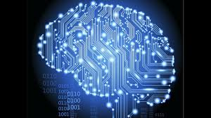

Jeszcze dziesięć lat temu w świecie komputerów rządził format stacjonarny. Ekran, stacja robocza, akcesoria tj.
myszka i klawiatura. W roku 2000 dominował niesamowity monopol Microsoftu, wchodził na rynek Windows 2000,
teraz wyglądający wręcz śmiesznie. Dużym osiągnięciem stawały się w granicach roku 2001 nagrywarki obsługujące
format CD i DVD, jednocześnie.

Rok do roku trwa ewolucja procesorów. Zwiększa się ich efektywność operacyjna. Praktyczna marka Intel. Wielu użytkowników pamięta czasy niestabilności Windowsa, wysoką temperaturę, dyski twarde o pojemności zaledwie kilkunastu gigabajtów.
Laptopy kilkanaście lat temu kosztowały krocie, a parametry miały zbliżone do dzisiejszych telefonów komórkowych.
Komputer osobisty przechodził metamorfozę z wielkiej maszyny w odpowiednik mieszczący się w dłoni. Palmtopy, dwuekranowy laptop teraz niesamowite tablety. Tendencja zmian oscyluje w zakresie zmniejszania wymiarów, lecz stałego zwiększania funkcjonalności. Do obsługi komputera nie służy już typowa myszka i klawiatura, a zwyczajnie dotyk (touchpad).
Dominacja Windowsa została ograniczona przez dynamiczny rozwój Linuksa. Popularny Ubuntu np. posiada podobne funkcjonalności, współpracuje nawet z wieloma aplikacjami z segmentu Win. Nakładki instalacyjne, darmowe pakiety biurowe. W 1998 powstaje Google i staje się pewne, że komputer połączy się na zawsze z internetem w formie multimedialnej. Wykorzystanie języków programowania tj. C++, Java, SQL do stworzenia profesjonalnych aplikacji biurowych, ułatwiających wykonywanie czynności zawodowych.
Rywalizacja producentów prowadzi do obniżenia cen, postawienie na design, minimalizm. W ostatnich dziesięciu latach wypieranie stacjonarnych odpowiedników przez laptopy, a w tej chwili ultrabooki, kilkanaście milimetrów grubości, tablety. Google obecnie pracuje nad okularami łączącymi rzeczywistość z funkcjami programistycznymi, podłączenie do sieci bez opóźnień. Wytyczanie odległości, mapy, kontakty w jednym miejscu. Niesamowita historia komputera prowadzi do kilku wniosków. Technologia rozbudziła pokłady kreatywności. Komputer współcześnie można nosić w kieszeni lub teczce. Waży bowiem często mniej niż dwa kilogramy. Programowanie eliminuje pracę ludzi. Ewolucja technologii zmienia społeczeństwo. Życie w alternatywnej rzeczywistości to norma. Nowoczesny sprzęt stanowi centrum multimedialne i biuro w jednym. Postępuje handel elektroniczny.